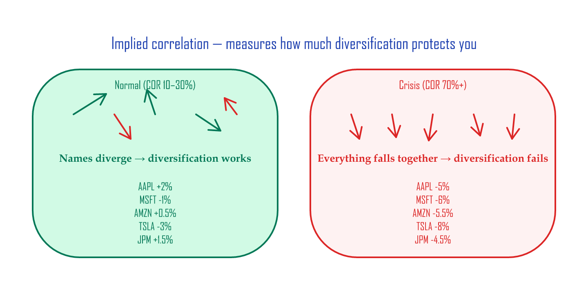
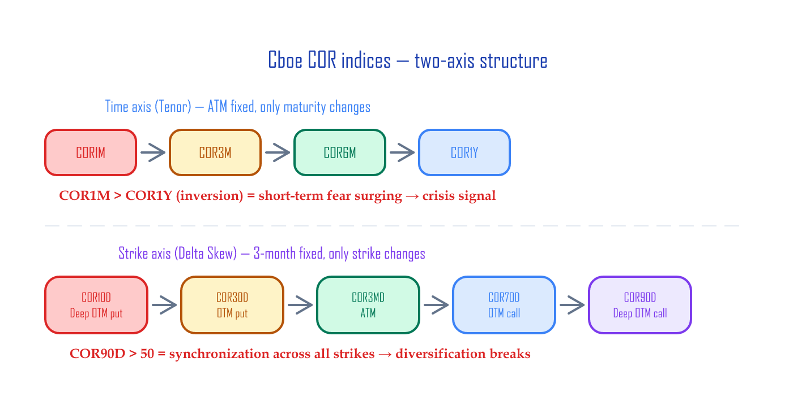
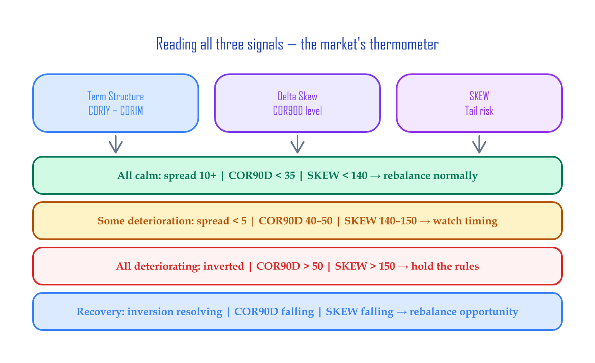

Volatility Dashboard — Tracking Correlation + Skew¶
Copy the Google Sheet: CBOE Correlation Indices (template for daily logging)
If you track Cboe's published implied correlation (COR) indices and the SKEW index every day, you can read shifts in market participants' psychology before the news catches up. This article walks through building a volatility dashboard in Google Sheets, and gives you a one-minute daily routine for reading three signals.
📚 Where this article fits: this is the tracking & interpretation tool. The taxonomy and conceptual background of the indices is in Market-Sentiment Volatility Indices. They're a pair.
30-second preview: the three things to check daily¶
| Signal | What it reads | Calm (e.g. Oct 27) | Stressed (e.g. Oct 16) |
|---|---|---|---|
| Term-structure spread | COR1Y − COR1M | 11.1 (wide) | 2.9 (narrow) |
| Strike-axis convergence (Delta Skew) | COR90D level | 36.5 | 54.6 |
| SKEW index | Tail-risk pricing for extreme drops | 148.5 | 147.1 |
Don't worry if the terms are unfamiliar — they're explained right below. All three signals deteriorating at the same time means market stress is building structurally.
Core concepts: 3-minute primer¶
What implied correlation is¶
In a normal market, the 500 stocks in the S&P 500 each move on their own — some up, some down. That's why diversification works. But in a crisis, every stock starts moving in the same direction at the same time. That's the moment diversification stops protecting you.
Implied correlation quantifies that "synchronization level" on a 0–100% scale. It's computed from the relationship between the S&P 500 index option's implied volatility (IV — the market's forward volatility expectation, baked into option prices) and the IVs of the top 50 single-name options.
| State | COR level | What it means |
|---|---|---|
| Normal | ~10–30% | Names move independently (diversification works) |
| Stressed | 50%+ | Everything moves the same direction (diversification weakens) |
| Crisis | 70%+ | Across-the-board co-crash |

The Cboe COR index family¶
Cboe publishes implied correlation along two axes (see Market-Sentiment Volatility Indices for the full background):
Time axis (Tenor) — ATM fixed, only maturity changes:
COR1M → COR3M → COR6M → COR9M → COR1Y
Normally, longer-dated uncertainty is higher. If the short end (COR1M) overtakes the long end (COR1Y), the message is "there's a fire right now."
Strike axis (Delta Skew) — 3-month maturity fixed, only strike changes:
COR10D (puts far below ATM) → COR30D → COR3MD (ATM) → COR70D → COR90D (calls far above ATM)
When COR90D rises sharply, synchronization is spreading even into the deep-OTM region.

The SKEW index¶
SKEW measures the tail-risk premium the S&P 500 options market is paying for extreme downside protection. When fire-insurance premiums suddenly rise, it means insurers are pricing in higher fire risk. When SKEW rises, institutions are paying more for "crash insurance."
| SKEW level | What it means |
|---|---|
| ≤ ~145 | Normal regime (post-2020 median ≈ 145) |
| 150–158 | Caution — institutions are loading up on puts (p75 band) |
| 158+ | High tail-risk pricing (above p95) |
SKEW's historical shift — thresholds recalibrated (2026-05)
Pre-2020, SKEW averaged ~115 and 140+ readings were rare. Post-2020 the regime shifted up structurally — current median ≈ 145, p75 ≈ 150, p95 ≈ 157. The legacy 140/150 thresholds became "normal state" and lost their signal value, so the daily dashboard now uses 150 caution / 158 stress (p75/p95 of the current distribution). The table above reflects that recalibration.
The SKEW paradox
SKEW can actually be higher during the recovery than right before the crash. That's because during the crash, institutions already own their puts. After the recovery, they buy fresh puts to hedge against "the next crash." A low SKEW reading can therefore be a market-bottom signal.
Step 1: Google Sheets structure¶
When you copy the sheet, there are two tabs:
| Tab | Contents | Data |
|---|---|---|
| Tenor Indices (Term structure) | COR1M, COR3M, COR6M, COR9M, COR1Y + S&P 500 | Daily log |
| Delta Skew Indices | COR10D, COR30D, COR3MD, COR70D, COR90D + S&P 500 + SKEW | Daily log |
Step 2: Updating the data¶
You can pull each index's daily close from the Cboe website for free:
| Index | Cboe dashboard |
|---|---|
| COR1M | cboe.com/us/indices/dashboard/cor1m |
| COR3M | cboe.com/us/indices/dashboard/cor3m |
| COR6M | cboe.com/us/indices/dashboard/cor6m |
| COR1Y | cboe.com/us/indices/dashboard/cor1y |
| SKEW | cboe.com/us/indices/dashboard/skew |
Read the daily close from each dashboard and add a row to the sheet. You can also use TradingView for live charts (CBOE:COR3M, etc.).
The dashboard chart¶
Combining all three signals into one chart lets you read structural stress at a glance.

Top: COR1M–COR1Y term structure (when the spacing tightens, that's caution; the red region marks inversion). Middle: COR10D–COR90D delta skew (COR90D above the orange 50 line = caution, above the red 60 line = stress). Bottom: SKEW index (150+ is caution, 158+ is stress).
Step 3: Reading the signals¶
Signal 1: Term-structure spread¶
Watch the gap between COR1M and COR1Y.
spread = COR1Y - COR1M
| Spread | State | Meaning |
|---|---|---|
| Wide (10+) | Normal | Short end calm, only long-dated uncertainty |
| Narrowing (≤5) | Caution | Short-end correlation rising fast → fear is starting |
| Inverted (negative) | Danger | COR1M > COR1Y → short-term co-crash mode |
Term-structure inversion was a crisis signal in both the 2008 GFC and the 2020 COVID drawdown.
Example — stressed (2025-10-16):
COR1M = 19.48, COR1Y = 22.38
spread = 2.9 ← caution zone
Example — calm (2025-10-27):
COR1M = 7.40, COR1Y = 18.52
spread = 11.12 ← normal
Signal 2: Delta Skew¶
Watch the absolute level of COR90D and the gap between COR90D and COR10D.
| Metric | Normal | Caution | Stressed |
|---|---|---|---|
| COR90D level | ≤ ~45 | 50–60 | ≥ 60 |
| COR90D − COR10D gap | 25+ (well dispersed) | Narrowing | Converged (all strikes near 1.0) |
When COR90D (deep-OTM call region) rises above 60, the entire market is synchronizing in one direction. When the gap narrows, correlations across all strikes converge toward 1.0 — you spread your eggs across many baskets, but every basket is sitting on the same shelf, and the shelf is tipping. Diversification stops working.
Threshold recalibration (2026-05)
The legacy 35/50 thresholds were calibrated against the pre-2020 distribution. In the post-2020 regime, COR90D's median is around 50, p75 ≈ 62, p95 ≈ 79 — so a 50 reading is now the typical state, not stress. Updated to 50/60 (p75/p95) so the signal actually marks "top quartile / top ventile" rather than "above average."
Example — caution (2025-10-16):
COR90D = 54.60 ← between 50 and 60, caution (early single-factor regime)
COR10D = 10.57
Signal 3: SKEW¶
SKEW is logged on the Delta Skew tab.
Example trajectory:
| Date | SKEW | S&P 500 | Reading |
|---|---|---|---|
| Oct 6 | 142.5 | 6,740 | Normal |
| Oct 10 | 138.9 | 6,553 | Down — put cost actually fell |
| Oct 22 | 152.9 | 6,699 | Institutions buying puts |
Data source: Cboe Global Indices
Step 4: Reading the three together¶
| Term Structure | COR90D | SKEW | Market state | Response |
|---|---|---|---|---|
| Wide (10+) | ≤ ~45 | < 150 | Calm | Rebalance normally |
| Narrowing (< 5) | 50–60 | 150–158 | Caution | Mind the rebalancing timing |
| Inverted | ≥ 60 | ≥ 158 | Stressed | Volatility incoming, hold the rules |
| Recovering after inversion | Falling | Falling | Recovery | Rebalancing opportunity |
The takeaway: all three signals deteriorating at once is structural stress. Just one of them moving could be noise.

Day-to-day routine¶
| When | What | Time |
|---|---|---|
| After the close | Pull COR + SKEW closes from the Cboe dashboards | 30 sec |
| Add a row to the sheet | 30 sec | |
| Read the three signals | — |
The checklist:
- [ ] Term-structure spread: wide / narrowing / inverted
- [ ] COR90D level: ≤ ~45 (normal) / 50–60 (caution) / ≥ 60 (stressed)
- [ ] SKEW: normal / caution / high
- [ ] Are all three deteriorating at once?
Python version¶
If you'd rather chart this in Python instead of the sheet, log the data manually into CSV (or export from TradingView).
Python: dashboard chart code
import pandas as pd
import matplotlib.pyplot as plt
import matplotlib.dates as mdates
# Load CSVs (download from sheet via File > Download > CSV)
# Expected: DATE, COR1M, COR3M, COR6M, COR9M, COR1Y, S&P500
tenor = pd.read_csv('tenor_indices.csv', skiprows=2, parse_dates=['DATE'])
# Expected: DATE, COR90D, COR70D, COR3M, COR30D, COR10D, S&P500, SKEW
skew = pd.read_csv('delta_skew_indices.csv', skiprows=2, parse_dates=['DATE'])
tenor = tenor.dropna(subset=['DATE'])
skew = skew.dropna(subset=['DATE'])
fig, axes = plt.subplots(3, 1, figsize=(14, 12), sharex=True)
# 1. Term Structure
for col, color in [('COR1M','#F44336'), ('COR3M','#FF9800'),
('COR6M','#FFC107'), ('COR9M','#4CAF50'), ('COR1Y','#2196F3')]:
axes[0].plot(tenor['DATE'], tenor[col], label=col, linewidth=1.5, color=color)
axes[0].set_ylabel('Implied Correlation (%)')
axes[0].set_title('Term Structure — COR1M to COR1Y')
axes[0].legend(loc='upper left', fontsize=8)
axes[0].grid(alpha=0.3)
# 2. Delta Skew
for col, color in [('COR10D','#F44336'), ('COR30D','#FF9800'),
('COR3M','#FFC107'), ('COR70D','#4CAF50'), ('COR90D','#2196F3')]:
axes[1].plot(skew['DATE'], skew[col], label=col, linewidth=1.5, color=color)
axes[1].set_ylabel('Implied Correlation (%)')
axes[1].set_title('Delta Skew — COR10D to COR90D')
axes[1].legend(loc='upper left', fontsize=8)
axes[1].grid(alpha=0.3)
# 3. SKEW
axes[2].plot(skew['DATE'], skew['SKEW'], color='#9C27B0', linewidth=2, label='SKEW')
axes[2].axhline(140, color='orange', ls='--', alpha=0.5, label='Caution (140)')
axes[2].axhline(150, color='red', ls='--', alpha=0.5, label='High (150)')
axes[2].set_ylabel('SKEW Index')
axes[2].set_title('SKEW — Tail-risk indicator')
axes[2].legend(loc='upper left', fontsize=8)
axes[2].grid(alpha=0.3)
axes[2].xaxis.set_major_formatter(mdates.DateFormatter('%Y-%m'))
plt.tight_layout()
plt.savefig('volatility_dashboard.png', dpi=150, bbox_inches='tight')
plt.show()
Python: spread auto-calculation + alerts
# Term-structure spread
tenor['spread'] = tenor['COR1Y'] - tenor['COR1M']
# Latest reading
latest = tenor.iloc[-1]
latest_skew = skew.iloc[-1]
print(f"=== {latest['DATE'].strftime('%Y-%m-%d')} signals ===")
spread = latest['spread']
print(f"Term-structure spread: {spread:.1f}", end="")
print(" ← deeply inverted!" if spread < -5 else " ← inverted · caution" if spread < 0 else " ← normal")
cor90d = latest_skew['COR90D']
print(f"COR90D: {cor90d:.1f}", end="")
print(" ← stressed" if cor90d > 60 else " ← caution" if cor90d > 50 else " ← normal")
skew_val = latest_skew['SKEW']
print(f"SKEW: {skew_val:.1f}", end="")
print(" ← stressed" if skew_val > 158 else " ← caution" if skew_val > 150 else " ← normal")
Limitations¶
-
End-of-day data — COR indices are computed at the close. They don't reflect intraday changes.
-
Constituent changes — the top 50 S&P 500 names rotate periodically based on market cap. Historical and current data may have different constituents.
-
SKEW's instability — in extreme market conditions, SKEW computation can be unstable. Cboe has been reviewing methodology improvements since 2025.
-
Correlation ≠ causation — a COR spike doesn't always foreshadow a crash. Short-term events (earnings season, Fed announcements) can cause temporary jumps.
Wrap-up¶
This dashboard is the market's thermometer:
- Term-structure spread — is short-term fear overtaking the long term?
- COR90D — overall market synchronization
- SKEW — how much institutions are paying for tail risk
For a long-term investor, the value of this dashboard is context, not timing:
- All three calm → "go ahead and rebalance"
- All three deteriorating → "don't rush, hold the rules"
- Recovery signals → "rebalancing opportunity, even institutions are calming down"
It takes one minute a day. The point is to keep you from getting shaken by fear, and to help you stick to your rules.
References¶
- Market-Sentiment Volatility Indices — Implied Correlation and the IV Surface
- Volatility Skew — The S&P 500's Smirk
- Cboe Implied Correlation Index White Paper (PDF)
- Cboe SKEW Index White Paper (PDF)
- Cboe Implied Correlation Indices
Cboe and VIX are registered trademarks of Cboe Exchange, Inc. SPX and S&P 500 are registered trademarks of S&P Global. This article has no affiliation with or endorsement from Cboe or S&P Global. Index data: Cboe Global Indices.